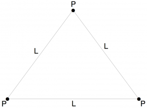

Gödel’s Incompleteness Theorem And Its Implications For Artificial Intelligence
Introduction
This text gives an overview of Gödel’s Incompleteness Theorem and its implications for artificial intelligence. Specifically, we deal with the question whether Gödel’s Incompleteness Theorem shows that human intelligence could not be recreated by a traditional computer.
Sections 2 and 3 feature an introduction to axiomatic systems, including a brief description of their historical development and thus the background of Gödel’s Theorem. These sections provide the basic knowledge required to fully understand Gödel’s Theorem and its significance for the history of mathematics – a necessary condition for understanding the arguments to follow. Section 4 features a thorough description of Gödel’s Theorem and outlines the basic idea of its proof. Sections 5 and 6 deal with arguments advocating the view that intelligence has a non-algorithmic component on the grounds of Gödel’s Theorem. In addition to a detailed account of the arguments, these sections also feature a selection of prominent objections to these arguments raised by other authors. The last section comprises a discussion of the arguments and my own objections.
The Formalization of Mathematics
At the beginning of the 20th century, the mathematical community suffered from a crisis regarding the very foundations of mathematics, triggered by the discovery of various paradoxes that called into question the reliability of mathematical intuition and the notion of proof. At that time, some fields of mathematics were grounded on a rigorous formal basis, called an axiomatic system (or interchangeably formal system), whereas other fields relied on a certain degree of intuitive insight.
In a formal way, an axiomatic system is a set of propositions, expressed in a formal language, called axioms. These axioms represent statements that are assumed to be true without proof. The set of axioms is equipped with a set of inference rules which can be used to derive other propositions, called theorems, by applying them to the axioms. Applying the rules of inference boils down to replacing expressions by certain other expressions according to precise syntactical rules. The axioms and the set of inference rules are ideally chosen in such a way that they are intuitively evident. This way, the truth of a complex, non-obvious statement can be accepted by accepting the truth of the axioms and sequentially applying the inference rules until the complex statement in question is deduced.
An early, prominent example of such an axiomatic system is the Euclidean geometry described by the ancient Greek philosopher Euclid in c. 300 BC (an English translation can be found in [Euc02]). It consists of 5 axioms making trivial statements about points, lines and circles (e.g. that any two points could be connected by a line). From these axioms, Euclid derived 48 non-trivial geometric propositions solely by means of logical inference and without making use of informal geometric intuition or perception.
Up until modern times, geometry was the only branch of mathematics that was predicated on such a sound axiomatic basis, whereas research and applications in other branches were carried out without a rigid formal notion about which types of inference were allowed and which statements were assumed to be intuitively evident. This was due to the fact that, for most practical purposes, mathematicians saw no need for doing so. However, this changed with the discovery of various paradoxes around the turn of the 20th century. In 1901, the British mathematician Bertrand Russell put forward what later came to be known as Russell’s paradox (cf. [Gri04]). This paradox showed an inherent flaw in the informal set theory proposed by German mathematician Georg Cantor, according to which every definable collection of distinct elements is a set. Russell defined the set R of all sets that do not contain themselves, symbolically:
$$\{x \; \mid \; x \not\in x\}$$According to Cantor, R is a valid set. The paradox arises when one asks the question whether R contains itself. If R contains itself, then by definition it does not contain itself. If, on the other hand, it does not contain itself then it contains itself by definition. Symbolically:
$$R \in R \; \iff R \not\in R$$Therefore, the question whether R contains itself has no well-defined answer. This example shows that the notion of a set defined by Cantor is flawed, even though it seems to be intuitively reasonable. Examples like this lead many mathematicians to recognize that intuition is not a safe guide and that there was a need to supply all branches of mathematics with an axiomatic system that would be sufficient to formally derive all true propositions, a standpoint later termed formalism (cf. [NN01] p. 3). Over time, more and more branches, both new and old, were equipped with sets of axioms (e.g. the Zermelo-Fraenkel set theory, cf. [Fra25]).
It is worth noting that axiomatic systems and formal proofs do not require an intuitive understanding of the entities described or the nature of the proven statements. Consider the following example:
Axiomatic system 1.
1. Every member of P is contained in exactly two members of L.
2. Every member of L contains exactly two members of P.
3. Every two members of L share exactly one member of P.
This axiomatic system makes statements about some abstract sets L and P , and even though we can understand the axioms per se, we do not associate any meaning with the symbols and we do not have any intuition about the overall structure of L and P. Still, we can deduce theorems from these axioms. For example, it can be shown that every three members of L contain exactly three members of P. Even though the axioms were given informally, they can be translated into second-order logic and the proof for the theorem can be carried out using rules that just replace certain sequences of symbols with other symbols. This way, the proof could be carried out by a computer simply by iteratively applying symbol replacement rules on meaningless sequences of symbols until the theorem is obtained. It is then clear that the theorem follows from the axioms without any intuition as to what the theorem or the axioms actually represent.
Hilbert's Program
A prominent representative of the formalist standpoint was David Hilbert, who initiated what was later termed Hilbert’s Program (cf. [Zac15]). Hilbert advocated the view that all fields of mathematics should be grounded on an axiomatic basis. Furthermore he demanded that every such system should be proven to be consistent, which means that it is impossible to deduce two contradictory theorems from the axioms.
Proving the inconsistency of an axiomatic system can be done by deducing a contradiction. The question that Hilbert wanted to address, however, was how to prove the consistency, i.e. how to prove the impossibility to deduce a contradiction. One way to do so is to find an interpretation of the axioms, such that they form true statements about some part of reality or some abstract concept of our intuition. A possible model for the axiomatic system 1 is given in the following image:

When we interpret the set P as the corners of a triangle and the set L as its edges, then the axioms are invested with meaning and we can verify beyond doubt that all axioms represent true statements about the model by verifying them for each individual element. This can be done easily since there are only finitely many elements. This proves the consistency of the system, because no contradiction can be deduced from true premises.
However, there are axiomatic systems for which the model-based approach to proving their consistency is open to dispute. If, for example, the axioms require the model to contain an infinite number of elements, then it is impossible to verify the truth of the axioms beyond doubt, since the truth can no longer be verified for each individual element. Moreover, the model-based approach actually only reduces the consistency of one system to the consistency of another system. As regards the triangle example, we established the consistency of the axioms by verifying them for the triangle, but in doing so we implicitly assumed the consistency of geometry. Therefore, we have only shown that if geometry is consistent, then our axiomatic system is also consistent; we have given what is called a relative proof of consistency.
Hilbert urged to find absolute proofs of consistency, i.e. proofs that establish the consistency of an axiomatic system without presupposing the consistency of another axiomatic system. Absolute proofs of consistency use structural properties of the axioms and inference rules in order to show that no contradictions can be derived; they are not proofs within the formal axiomatic system itself, but rather proofs about the system. They are, so to speak, proofs in some meta-system. To better understand the concept of a meta-system, consider the statement ”’$p \vee p \rightarrow p$’ is a tautology”. This is not a statement within propositional logic, but a statement in some meta-system about propositional logic, and it can be proved within that meta-system.
Absolute proofs of consistency have successfully been established for some axiomatic systems, e.g. propositional logic (cf. [NN01] p. 45). This lead Hilbert to believe that such a proof could be found for any consistent axiomatic system, which is where Gödel’s Incompleteness Theorem comes into play: amongst other things, it shows that this is impossible for most of the axiomatic systems.
Gödel's Incompleteness Theorem
First presented in [Göd31], Gödel’s Incompleteness Theorem is actually comprised of two related but distinct theorems, which roughly state the following (cf. [Raa15]):
1. Any consistent formal [axiomatic] system F within which a certain amount of elementary arithmetic can be carried out is incomplete; i.e. there are statements of the language of F which can neither be proved nor disproved in F.
2. For any consistent system F within which a certain amount of elementary arithmetic can be carried out, the consistency of F cannot be proved in F itself.
The first of these two theorems is often referred to simply as Gödel’s Incompleteness Theorem.
Let us further elaborate these statements. The first theorem basically states that all axiomatic systems that are expressive enough to perform elementary arithmetic contain statements that can neither be proved nor disproved within the system itself, i.e. neither the statements nor their negations can be obtained by iteratively applying the inference rules to the axioms.
To say that a system is capable of performing arithmetic means that it either contains the natural numbers along with addition and multiplication, or that natural number arithmetic can be translated into the system such that the system mimics arithmetic in one way or another.The second theorem states that the question of whether or not an axiomatic system is consistent belongs to those statements that cannot be proved within the system. Note that this does not mean that a proof showing the consistency of the system in question could not be given in some meta-system. However, if the consistency cannot be shown within the system itself, then a proof within the meta-system has to make inferences which cannot be modeled within the system itself. Such methods would then be open to dispute, because the consistency of the meta-system is not established. A proof of its consistency would require us to use even more elaborate methods of proof within some meta-meta-system, resulting in an infinite regress. Therefore, absolute proofs of consistency, as envisioned by Hilbert, cannot be given for axiomatic systems that are capable of doing arithmetic.
The implications of Gödel’s incompleteness theorems came as a shock to the mathematical community. For instance, it implies that there are true statements that could never be proved, and thus we can never know with certainty if they are true or if at some point they turn out to be false. It also implies that no absolute proofs of consistency could be given. Hence, the entirety of mathematics might be inconsistent and we cannot know for sure whether at some point a contradiction might occur which renders all of mathematics invalid.
Proof Idea
For some of the following arguments, it is necessary to have a rough understanding of the ideas underlying the proof of Gödel’s theorem. At the core of the proof lies a sophisticated method of mapping the symbols of arithmetic (like =, +, ×, ...), formulas within arithmetic (like ’∃x(x = y+1)’) and proofs within arithmetic (i.e. sequences of formulas) onto a unique natural number (called Gödel number) in such a way that the original symbol, formula or proof could be reconstructed from that number. This allows to express statements about arithmetic (like ”The first sign of ’∃x(x = y+1)’ is the existential quantifier”) as a formula within arithmetic itself (i.e. by stating that the Gödel number g of ’∃x(x = y + 1)’ has a certain property, expressible as an arithmetical formula F(g), that is only possessed by the Gödel numbers of statements beginning with the existential quantifier), effectively allowing arithmetic to talk about itself.
Next, Gödel defined a statement G which states ”G cannot be proved within arithmetic”, and showed how it could be translated into a formula within arithmetic using Gödel numbering (this formula G has come to be refered to in the literature as the Gödelian formula). G yields a contradiction similar to Russell’s paradox: If it could be proved within the system, then it would be false, hence the system would be inconsistent. Assuming that arithmetic is consistent it follows that G cannot be shown within arithmetic and thus it follows that G is true. So G is an example of a formula that is true but cannot be proved in the system, which proves the first Incompleteness Theorem.
Various objections against the possibility of artificial intelligence have been raised on the grounds of Gödel’s incompleteness theorems, which have come to be referred to as Gödelian Arguments. The following sections give an overview of two of the most prominent arguments, along with several objections to these arguments.
Lucas' Argument
An early argument stems from the British philosopher John Lucas, put forward in a scientific paper with the title Minds, Machines and Gödel ([Luc61]). Lucas argues that, by definition, cybernetical machines (which includes computers in particular) are instantiations of a formal system. He backs up his claim by arguing that a machine has only finitely many types of operations it can perform and likewise only a finite number of initial assumptions built into the system. Thus, the initial assumptions could be represented as symbolic axioms within some formal system and the possible types of operations could be represented by formal rules of inference. Hence, every operation that a machine performs could be represented by formulas representing the state of the machine before and after the operation and stating which inference rule was used to get from the first formula to the second. In this manner the entire sequence of operations performed by the machine could be represented as a proof within a formal system and therefore the types of outputs that the machine could produce correspond to the theorems that can be proved within this formal system.
Now, since human minds can do arithmetic, a formal system F that adequately models the mind would also have to be capable of doing arithmetic, hence there are true statements that the machine is incapable of producing, but which the mind can. Lucas states that the Gödelian formula G(F) is an example for this: By following Gödel’s proof, the human mind knows that G(F) is true, but, as shown by Gödel, G(F) cannot be proved within the formal system F and consequently cannot be produced by the machine as being true. He concludes that a machine could then not be an adequate model of the mind and that the mind and machines are essentially different, since there exist true statements that the mind can know to be true but a machine cannot know to be true.
Following his argument, Lucas addresses some possible objections to his point and tries to refute them.
The Extended Machine Objection
The first objection addressed by Lucas is that if a formal system F is not capable of constructing G(F), an extended, more adequate machine could be constructed that is indeed capable of producing G(F) and everything that follows from it. But then, he argues, this new machine will correspond to a different formal system F′ with other axioms or other rules of inference and this formal system will again have a Gödelian formula G(F′) that the machine is incapable of producing but the human mind can see to be true. If the machine was again modified to be able to produce G(F′), resulting in a new formal system F′′, then again a new formula G(F′′) could be constructed and so forth, ad infinitum. This way, no matter how many times the machine gets improved, there will always be a formula that it is incapable of producing but the human mind knows to be true.
The second objection he addresses is related: Since the construction of the Gödelian formula G(F) is a mechanizable procedure, the machine could be programmed in such a way that, in addition to its standard operations, it is capable of going through the Gödelian procedure to produce the Gödelian formula G(F) from the rest of the formal system, adding it to the formal system, then going through the procedure again to produce the Gödelian formula G(F′) of the strengthened formal system, adding it again, etc. This, as Lucas says, would correspond to a formal system that, in addition to its standard axioms, contains an infinite sequence of additional axioms, each one being the Gödelian formula of the system with the axioms that came before. Lucas objects to this argument by refering to a proof given by Gödel in a lecture at the Institute of Advanced Study, Princeton, N.J., U.S.A. in 1934. In this lecture, Gödel showed that even for formal systems that contain such an infinite sequence of Gödelian formulas as axioms, a formula could be constructed that the human mind can see to be true but that cannot be proved within the system. The intuition behind this proof, as Lucas points out, is the fact that the infinite sequence of axioms would have to be specified by some finite procedure and thus a finite formal system could be constructed that precisely models the infinite formal system.
Rogers' Objection
Lucas also addresses an objection raised by Hartley Rogers in [Rog87]. Rogers claims that a machine modeling a mind should allow for non-inductive inferences. Specifically, he suggests that a machine should maintain a list of propositions neither proved nor unproved and occasionally add them to its list of axioms. If at some point their inclusion leads to a contradiction, it should be dropped again. This way, the machine could produce a formula as true even though it could not be proved from its axioms, which would render Lucas’ argument invalid. Lucas replies to this argument by stating that such a machine must choose the formulas it accepts to be true without proof at random, because a deterministic procedure would again make the whole system an axiomatic system for which an unprovable formula could be constructed that we can see to be true. Such a system, Lucas argues, would not be a good model of the human mind, because the formulas it randomly accepts as true could be wrong, even if they are consistent with the axioms.
Rogers also calls attention to the fact that the Gödelian argument is only applicable if we know that the machine is consistent. Human beings, he argues, might be inconsistent and, hence, an inconsistent machine could be a model of the human mind. Lucas answers by stating that even though human beings are inconsistent in certain situations, this is not the same type of inconsistency as in a formal system. A formal inconsistency allows to derive every sentence and its negation as true. However, when humans arrive at contradictory conclusions, they do not stick to this contradiction, but rather try to resolve it. In this sense human beings are self-correcting. Lucas continues to argue that a self-correcting machine would still be subject to the Gödelian argument, and that only a fundamentally inconsistent machine, which would allow to derive all formulas as true, could escape the Gödelian argument.
Lucas concludes his essay by stating that the characteristic attribute of human minds is the ability to step outside the system. Minds, he argues, are not constrained to operate within a single formal system, but rather they can switch between systems, reason about a system, reason about the fact that they reason about a system, etc. Machines, on the other hand, are constrained to operate within a single formal system that they could not escape. Thus, he argues, it is this ability that makes human minds inherently different from machines.
The following objections are not addressed in [Luc61], but have been voiced by other authors in reaction to Lucas’ argument.
Norvig's and Russell's Objection
In the book Artificial Intelligence: A Modern Approach ([RN03]), Peter Norvig and Stuart Russell, two artificial intelligence researchers, argue that a computer could be programmed to try out an arbitrary amount of different formal systems, or even invent new formal systems. This way, the computer could produce the Gödel sentence of one system S by switching to another, more powerful system T and carrying out the proof of S’s Gödel sentence in T.
Further, they try to reduce Lucas’ argument to absurdity by pointing out that the brain is a deterministic physical device operating according to physical laws and in consequence also constitutes a formal system. Therefore, they argue, Lucas’ argument could be used to show that human minds could not simulate human minds, which is a contradiction. Thus, they conclude that Lucas’ argument must be flawed.
Benacerraf's Objection
Paul Benacerraf presents an objection to Lucas’ argument in [Ben67]. He raises attention to the fact that in order to produce the Gödel sentence of a formal system, one must have a profound understanding of the system’s axioms and inference rules. Constructing the Gödel sentence for arithmetic might be simple, but Benacerraf claims that if the human mind could be simulated by a formal system, then this formal system would be so complex that a human being could never understand it to the extent that he would be able to construct its Gödel sentence. Therefore, Benacerraf concludes that Lucas’ argument does not actually prove that the human mind could not be simulated by a formal system, but rather that it proves a disjunction: Either the human mind could not be simulated by a formal system, or such a formal system would be so complex that a human being could not fully understand it.
Hofstadter's Objection
In his book Gödel, Escher, Bach [Hof79], physicist and cognitive scientist Douglas Hofstadter extends on the objections described above. As demonstrated in Lucas’ refutation of the Extended Machine Objection, adding a procedure to produce the Gödel formula G(F) does not refute his argument since this corresponds to a new system F′ with a new Gödel formula G(F′) that it is unable to produce. No matter how many times the capability of producing the Gödel formula of the system obtained so far is added, the resulting system will always have a new Gödel formula G(F′...′) that it is unable to produce. Hofstadter argues that if this process of adding the capability to produce the Gödel formula is carried out sequentially, the resulting system becomes more and more complex with every step. He claims that at some point the system is so complex that human beings would be unable to produce the Gödel formula. At this point, he concludes, neither the system F′...′ nor the human being that the system models can produce the Gödel formula and, therefore, the human being does not have more power than the system.
Hofstadter takes the view that a program that models human thought needs to be able to switch between systems in an arbitrary fashion. Rather than being constrained to operating within a certain system, it must always be able to jump out of the current system into a meta-system, eventually allowing the system to reflect about itself, to reflect about the fact that it reflects about itself, and so forth. This, he argues, would require the program to be able to understand and modify its own source code.
Penrose's Argument
An argument similar to Lucas’ argument has been proposed by Roger Penrose in a book with the title The Emperor’s New Mind ([Pen89]), in which Penrose claims to overcome the objections that were raised against Lucas’ argument. His argument has later been refined and extended in his book Shadow’s of the Mind ([Pen94]). Here, we shall deal with this refined version of the argument.
Penrose attempts to show that mathematical insight cannot be simulated algorithmically by leading this assumption to a contradiction. He defines mathematical insight as the means by which mathematicians generate mathematical propositions and their proofs and are able to follow and understand each other’s proofs.
Penrose’s argument can be reconstructed as follows:
1. Assume (for the sake of contradiction) that there is some formal system F that captures the thought processes required for mathematical insight.
2. Then, according to Gödel’s theorem, F cannot prove its own consistency.
3. We, as human beings, can see that F is consistent.
4. Therefore, since F captures our reasoning, F could prove that F is consistent.
5. This is a contradiction and, therefore, such a system F could not exist.
The strong assumption in this otherwise logically sound argument is 3, that we can see that F is consistent. Penrose argues for 3 in two different ways (labeled as 3a and 3b in the following)
3a.1: We, as human beings, know that we are consistent.
3a.2: Therefore, if we know that F captures our reasoning, we know that F is consistent.
Penrose recognises that this argument rests on the assumption that we could know that F captures our reasoning. He therefore extends his argument to capture the case where we do not know that F captures our reasoning, but we can still see that F is consistent.
3b.1: By definition, F consists of a set of axioms and inference rules.
3b.2: Each individual axiom could be verified by us, since if F is able to see their truth, then so are we.
3b.3: Furthermore, the validity of the inference rules could also be verified by us, since it would be implausible to believe that human reasoning relies on dubious inference rules.
3b.4: Therefore, since we know that the axioms are true and that the inference rules are valid, we know that F is consistent.
Later in his book, Penrose addresses the question why his argument is not applicable to human brains. To this end, he presents four possible views on the question of how human consciousness and reasoning comes into existence (cf. [Pen94]):
A: All thinking is computation; in particular, feelings of conscious awareness are evoked merely by the carrying out of appropriate computations.
B: Awareness is a feature of the brain’s physical action; and whereas any physical action can be simulated computationally, computational simulation cannot by itself evoke awareness.
C: Appropriate physical action evokes awareness, but this physical action cannot even be properly simulated computationally.
D: Awareness cannot be explained by physical, computational, or any other scientific terms.
Penrose himself embraces position (C). He points out that all the physical laws presently known to us are algorithmic in nature, and therefore argues that there must be non-algorithmic physical phenomena yet to be discovered. He hypothesizes that these phenomena are based on the interaction between quantum mechanics and general relativity.
McCullough's Objection
In [McC95], Daryl McCullough stresses a few loose ends in Penrose’s argument. For instance, he points out that there is an ambiguity in the definition of F, and that there are actually three different ways to interpret F:
1. F represents the mathematician’s inherent reasoning ability.
2. F represents a snapshot of the mathematician’s brain at a certain point in time, such that it includes both his inherent reasoning ability and the empirical knowledge that the mathematician acquired during his lifetime.
3. F represents the maximum of what could ever be known by the mathematician through reasoning and empirical knowledge.
McCullough argues that this dinstinction becomes important when dealing with the question whether the mathematician could know that his reasoning powers are captured by F. If the mathematician learns this fact empirically, then this knowledge is not reflected by F , and therefore Penrose’s original argument would be invalid. However, he acknowledges that an argument analogous to Penrose’s argument goes through for an extended system F′, which is F extended by the axiom that one’s reasoning powers are captured by F.
McCullough also addresses the fact that Penrose’s argument rests on the assumption that human reasoning is consistent and that human beings can be sure of their own consistency. He argues that this assumption is not beyond doubt and presents a thought experiment in order to show how inconsistencies could turn up even during careful and justified reasoning. He proposes to imagine an interrogator asking questions that can be answered by yes or no, and an experimental subject that can answer these questions by pressing a ’yes’ button or a ’no’ button. If the interrogator asks the question ”Will you push the ’no’ button”, then this question cannot be answered truthfully. The subject knows that the true answer is ’no’, but he cannot communicate this answer by pressing the ’no’ button. McCullough now extends this thought experiment and assumes that the subject’s brain is attached to a device that is able to read if the subject’s mind is in a ’yes’ or ’no’ state of belief and correspondingly flashes a light labeled ’yes’ or ’no’. If the interrogator now poses the question ”Will the ’no’ light flash”, the subject has no way of holding a belief without communicating it. Now, if the subject’s beliefs are consistent, the answer to the question is ”no”, but the subject cannot correctly believe the answer to be ”no”, and therefore he cannot correctly believe that he is consistent. Thus, no matter how much careful thought humans give to producing their answer, and no matter how intelligent they are, they cannot be sure of their own consistency.
McCullough concludes that the only undoubtful logical consequence of Penrose’s argument is that if human reasoning can be captured by a formal system F, then there is no way to be certain that F is consistent. This, he argues, is not a limitation on what formal systems could achieve in comparison to human beings, but rather a general insight about a limitation in one’s ability to reason about one’s own reasoning process.
Chalmers' Objection
Another answer to Penrose’s argument has been provided by Australian philosopher David Chalmers in [Cha95]. Chalmers argues that it is inadequate to assume that a computational procedure simulating the human mind would consist of a set of axioms and inference rules. He claims that even in today’s AI research, there are examples for computational procedures that are not decomposable into axioms and rules of inference, e.g. neural networks. Chalmers acknowledges that, according to a theorem by William Craig (cf. [Cra53]), for every algorithm we can find an axiomatic system that produces the same output. But this system would be rather complex, casting doubt on Penrose’s assumption that its inference rules could be verified by human thought. Thus, Chalmers concludes that Penrose’s argument only applies to rule-based systems (like automatic theorem provers), but not to all computational procedures.
Apart from this, Chalmers also claims that the assumption that we are knowably consistent already leads to a contradiction in itself. He tries to prove formally that any system that knows about its own consistency is inconsistent. To this end, he introduces the symbol B to represent the system’s belief, where B(n) corresponds to the statement that the system believes that the statement with Gödel number n is true. Further, he introduces ⊢ A to denote that the system knows A. Now he makes the following assumptions:
1. If the system knows A, then it knows that it believes that A is true.
Formally: If ⊢ A then ⊢ B(A).
2. The system knows that it can use modus ponens in its reasoning.
Formally: ⊢ B(A1) ∧ B(A1 → A2) → B(A2)
3. The system knows the fact described in 1.
Formally: ⊢ B(A) → B(B(A))
4. The system is capable of doing arithmetic.
5. The system knows that it is consistent.
Formally: ⊢ ¬B(false)
From these assumptions, the first four of which he deems to be reasonable, Chalmers formally proves that the system must be inconsistent by making use of Gödel’s theorem. Thus, the assumption 5 that the system knows that it is consistent could not hold for any system fulfilling the premises 1 through 4. He therefore concludes that the contradiction that arises in Penrose’s argument is due to the false assumption that humans are knowably consistent, rather than the allegedly false assumption that human thought could not be captured by a formal system.
Discussion
In this text, we have learned about axiomatic systems and their historical background. We have learned about the mathematicians’ endeavour to formalize mathematics and prove its consistency and we have seen how Gödel’s theorem implied that this is impossible and that there are true statements whose truth cannot be proved. We have seen how Lucas and Penrose argued that it is impossible to capture human thought by means of an axiomatic system on the grounds of Gödel’s theorem, and that therefore artificial intelligence is impossible. We have also dealt with objections to these arguments by other authors and thus we have seen that the Gödelian arguments are not generally accepted.
From my point of view, Lucas’ argument seems rather unconvincing. If a formal system F captures human thought, I agree to Benacerraf that the system would be so complex that it would be highly doubtful that a human being could see the truth of the Gödel sentence G(F). But even if this were possible, it does not show that humans are different from machines and can do something that machines cannot. As shown in [Amm97], it is indeed possible to prove the Gödel sentence algorithmically, as long as the system performing the proof does not correspond to the system whose Gödel sentence is proven. Thus, if a human being can see the truth of the Gödel sentence G(F), this can be viewed as being analogous to some formal system F′ proving the Gödel sentence G(F), which is indeed possible. Therefore, in seeing the truth of the Gödel sentence G(F), the human mind does not do something which is generally impossible for machines. Lucas’ argument would only go through if he could show that a human being is able to see the truth of his own Gödel sentence, because this is what machines cannot do. It is questionable, however, what is meant by the Gödel sentence of a human being in the first place if we do not regard human beings as formal systems to begin with.
As for Penrose’s argument, I am not convinced by fact 3 that a human being could see that a formal system F capturing his thought processes is consistent. In his first argument 3a, Penrose argues that we as human beings know that we are consistent and therefore, since F captures our reasoning, we know that F is consistent. I think that this argument is based on an ambiguity in the definition of consistency. When talking about formal systems, consistency has a very clear definition: It means that no contradictory theorems could be derived within the system. However, it is unclear what it means for a human being to be consistent. Since Penrose does not regard human beings as formal systems, we cannot apply the same definition of consistency.
A reasonable definition would be that a human being is consistent if and only if he does not believe in two contradictory sentences, which is most likely what Penrose means when talking about the consistency of a human being. This is equivalent to saying that the human’s belief system is a consistent system. A human’s belief system is the formal system whose theorems correspond to the sentences that the human believes to be true. Its axioms are what the human originally believes to be true, and its inference rules are the logical inferences that the human makes in order to deduce new beliefs. But a human’s belief system is not equivalent to the human’s mind. Rather, the belief system is one of the results of human thought - a model that humans use to judge the truth of statements. Therefore, if our belief system is consistent, and we know that our belief system is consistent, this does not mean that we know that a formal system simulating our mind (including but not limited to our belief system) is also consistent. This renders the argument 3a invalid.
Apart from this, it is doubtful whether a human’s belief system is necessarily consistent in the first place. Consistent belief systems are usually only held by careful thinkers that are acquainted with the rules of logic, and there are undoubtedly many humans with inconsistent belief systems resulting from logical fallacies. Therefore, Penrose’s argument could show at best that the minds of careful thinkers could not be simulated computationally, whereas it does not apply to the minds of non-careful thinkers with inconsistent belief systems.
In 3b, Penrose argues for 3 by stating that humans could verify the consistency of F by verifying its axioms and inference rules. In this argument, Penrose makes the implicit assumption that the theorems of F correspond to the statements that the simulated human mind believes to be true. This becomes evident in the way he argues for 3b.2 and 3b.3. So again Penrose fails to distinguish between the human mind and the human’s belief system, making 3b invalid out of the same reason as 3a. A formal system might be able to simulate human thought without any obvious relation between the system’s theorems and the statements that the resulting mind believes to be true. Thus, Penrose’s argument shows at best that a formal system that captures human thought could not correspond to the human’s belief system, since this would lead to a contradiction. However, it does nothing to show that human thought could not be simulated by any formal system, as long as the theorems of this formal system do not correspond to the statements that the resulting mind believes to be true.
Up to this day, Gödelian arguments are continuously debated, and there is no consensus among philosophers and researchers as to whether they are true or false. To the best of my knowledge, Lucas and Penrose have not explicitly addressed the described objections in their publications. Still, they have not backed down from being persuaded of their arguments. There are a lot more objections to their arguments in the literature, but listing them all would be out of the scope of this text. Lucas maintains a list of criticisms of the Gödelian argument on his website at https://web.archive.org/web/20180629160844/http://users.ox.ac.uk/~jrlucas/Godel/referenc.html, referencing 78 sources as of August 2017.
References
[Amm97] Kurt Ammon. An automatic proof of Gödel’s incompleteness theorem. Artificial Intelligence, 95, 1997. Elsevier.
[Ben67] Paul Benacerraf. God, the devil, and Gödel. The Monist, 51, 1967. Oxford University Press.
[Cha95] David J Chalmers. Minds, machines, and mathematics. Psyche, 2, 1995. Hindawi Publishing Corporation.
[Cra53] William Craig. On axiomatizability within a system. The Journal of Symbolic Logic, 18, 1953. Association for Symbolic Logic.
[Euc02] Euclid. Euclid’s Elements. 2002. Green Lion Press.
[Fra25] Adolf Fraenkel. Untersuchungen über die Grundlagen der Mengenlehre. Mathematische Zeitschrift, 22, 1925. Springer.
[Göd31] Kurt Gödel. Über formal unentscheidbare Sätze der Principia Mathematica und verwandter Systeme I. Monatshefte für Mathematik und Physik, 38, 1931. Springer.
[Gri04] Nicholas Griffin. The prehistory of Russell’s paradox. In One hundred years of Russell’s paradox. 2004. de Gruyter.
[Hof79] Douglas R. Hofstadter. Gödel, Escher, Bach: An Eternal Golden Braid. 1979. Basic Books, Inc.
[Luc61] John Lucas. Minds, machines and Gödel. Philosophy, 36, 1961. Cambridge University Press.
[McC95] Daryl McCullough. Can humans escape Gödel? Psyche, 2, 1995. Hindawi Publishing Corporation.
[NN01] Ernest Nagel and James R. Newman. Gödel’s proof. 2001. New York University Press.
[Pen89] Roger Penrose. The Emperor’s New Mind. 1989. Oxford University Press.
[Pen94] Roger Penrose. Shadows Of The Mind. 1994. Oxford University Press.
[Raa15] Panu Raatikainen. Gödel’s Incompleteness Theorems. In The Stanford Encyclopedia of Philosophy. Spring 2015 edition, 2015.
[RN03] Stuart J. Russell and Peter Norvig. Artificial Intelligence: A Modern Approach. 2003. Pearson Education.
[Rog87] Hartley Rogers, Jr. Theory of recursive functions and effective computability. 1987. MIT Press.
[Zac15] Richard Zach. Hilbert’s Program. In The Stanford Encyclopedia of Philosophy. Summer 2015 edition, 2015.